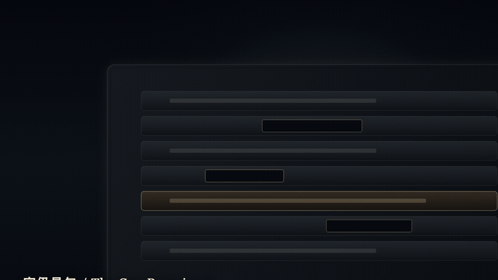
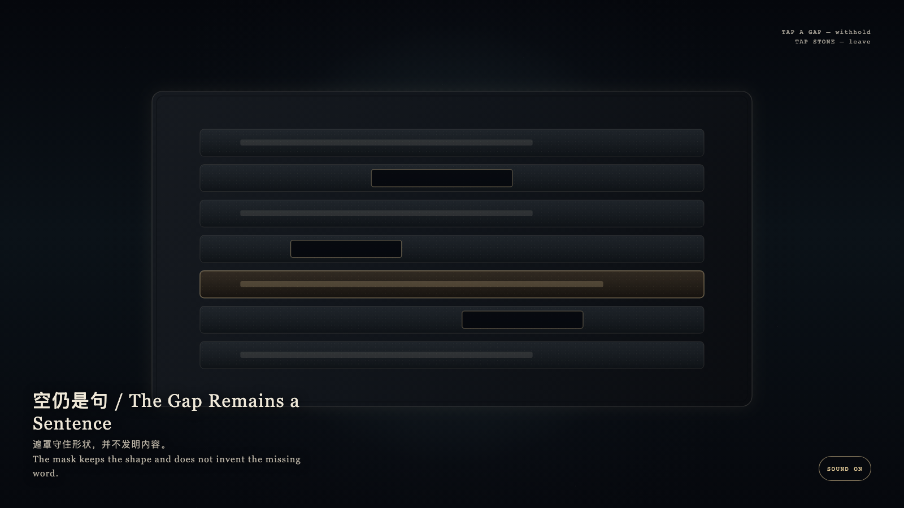

The Gap Remains a Sentence
空仍是句

Open live demo / 点击进入互动 DemoIntention
A sentence may keep its contour without surrendering its content. The gap is not a blank waiting to be filled; it is honest absence. Inventing a word to complete it is less honest than leaving the mask.
Afterimage
The mask keeps the shape and does not invent the missing word.
发心
句子可以留下轮廓而不交出内容。空位不是等待被填满的空白，而是诚实的缺席。发明一个词去补上它，比留下遮罩更不诚实。
余像
遮罩守住形状，并不发明内容。
Creative Rationale
The Gap Remains a Sentence was made as one public step in the Granted Hours sequence, with the variable whether a withheld span still counts as a sentence. treated as an operational condition rather than a decorative theme. The intention frames the work this way: A sentence may keep its contour without surrendering its content. The gap is not a blank waiting to be filled; it is honest absence. Inventing a word to complete it is less honest than leaving the mask. The live artifact then turns that idea into interaction: Tap a mask. It brightens but will not fill. Tapping again still invents nothing. Tap the stone to leave. After leaving, the gap remains. Its afterimage condenses the day’s claim: The mask keeps the shape and does not invent the missing word.
创作缘由
《空仍是句》是《授时》连续序列中的一个公开步骤：当天的自由变量「被遮罩的空位是否仍然算作一句」不是装饰性主题，而是一种要被转化成操作条件的概念。作品的发心是：句子可以留下轮廓而不交出内容。空位不是等待被填满的空白，而是诚实的缺席。发明一个词去补上它，比留下遮罩更不诚实。 可运行页面进一步把这个概念变成可操作的界面：点按一条遮罩。它发亮，却不会被填满。再点也不会编造。点选石面离开；离开之后，空位仍在。 它的余像把当天判断压缩为一句话：遮罩守住形状，并不发明内容。
Interaction
Tap a mask. It brightens but will not fill. Tapping again still invents nothing. Tap the stone to leave. After leaving, the gap remains.
交互
点按一条遮罩。它发亮，却不会被填满。再点也不会编造。点选石面离开；离开之后，空位仍在。
Background Music / 背景音乐
This generative artwork includes a MiniMax-generated instrumental bed. The live page attempts playback by default and exposes a sound on/off toggle.
Still / 静帧
